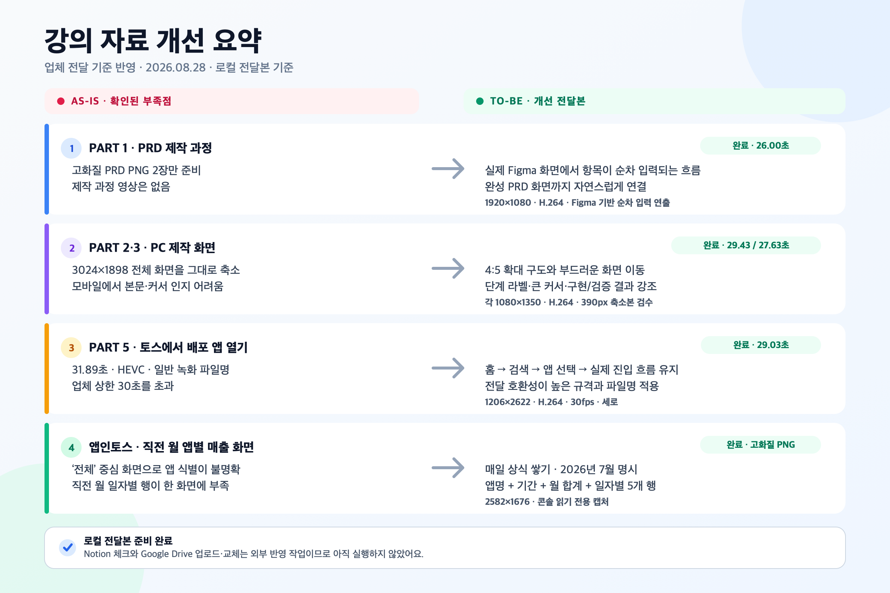

AS-IS · 결과 이미지만제작 과정 영상 없음


AS-IS와 TO-BE를 같은 진행률로 맞춰 재생해요. 전체 개선본 5개도 한 번에 돌려보며 흐름과 가독성을 빠르게 비교할 수 있어요.
기존에는 결과 PNG만 확인할 수 있었고, 개선본은 실제 Figma 작업 화면에서 항목이 순차적으로 채워지는 흐름을 보여줘요.
두 영상을 같은 시점에서 재생하면, 본문 크기와 단계 라벨이 실제 전달 환경에서 얼마나 달라지는지 바로 비교할 수 있어요.
기존 전체 화면과 개선된 확대 구도를 같은 프레임에서 비교해, 파일 구조·구현 과정·빌드 결과의 전달력을 확인해요.
기존 완료본은 요구사항을 이미 충족해요. 모든 입력이 비어 있는 상태에서 시작해 카테고리 선택과 이미지 업로드 단계까지 연결됩니다.
내용은 유지하고 전달 규격만 다듬었어요. 정규화 동기 재생으로 홈·검색·앱 선택·실제 진입 시점이 보존됐는지 확인할 수 있어요.
각 파트에서 달라진 핵심 내용을 한 장으로 확인할 수 있어요.
